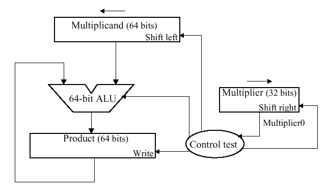
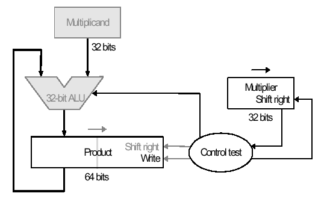
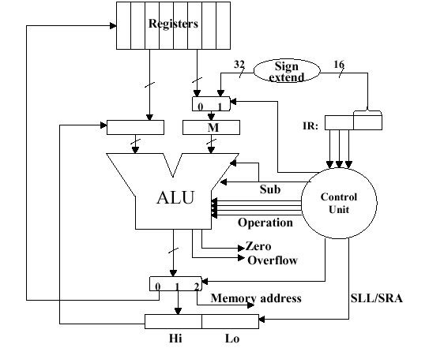
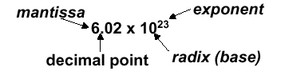

Reading Assignments and Exercises
This section is organized as follows:
-
3.1. Arithmetic and Logic Operations
3.2. Arithmetic Logic Units and the MIPS ALU
3.3. Boolean Multiplication and Division
3.4. Floating Point Arithmetic
3.5. Floating Point in MIPS
Information contained herein was compiled from a variety of text- and Web-based sources, is intended as a teaching aid only (to be used in conjunction with the required text, and is not to be used for any commercial purpose. Particular thanks is given to Dr. Enrique Mafla for his permission to use selected illustrations from his course notes in these Web pages.
In order to secure your understanding of the topics in this section, students should review the discussion of number representation in Section 2.4, especially twos complement.
3.1. Arithmetic and Logic Operations
Reading Assignments and Exercises
The ALU is the core of the computer - it performs arithmetic and logic operations on data that not only realize the goals of various applications (e.g., scientific and engineering programs), but also manipulate addresses (e.g., pointer arithmetic). In this section, we will overview algorithms used for the basic arithmetic and logical operations. A key assumption is that twos complement representation will be employed, unless otherwise noted.
3.1.1. Boolean Addition
When adding two numbers, if the sum of the digits in a given position equals or exceeds the modulus, then a carry is propagated. For example, in Boolean addition, if two ones are added, the sum is obviously two (base 10), which exceeds the modulus of 2 for Boolean numbers (B = Z2 = {0,1}, the integers modulo 2). Thus, we record a zero for the sum and propagate a carry valued at one into the next more significant digit, as shown in Figure 3.1.

Figure 3.1. Example of Boolean addition with carry propagation,
adapted from [Maf01].
3.1.2. Boolean Subtraction
When subtracting two numbers, two alternatives present themselves. First, one can formulate a subtraction algorithm, which is distinct from addition. Second, one can negate the subtrahend (i.e., in a - b, the subtrahend is b) then perform addition. Since we already know how to perform addition as well as twos complement negation, the second alternative is more practical. Figure 3.2 illustrates both processes, using the decimal subtraction 12 - 5 = 7 as an example.
Figure 3.2. Example of Boolean subtraction using (a) unsigned
binary representation, and (b) addition with twos complement negation -
adapted from [Maf01].
Just as we have a carry in addition, the subtraction of Boolean numbers uses a borrow. For example, in Figure 3.2a, in the first (least significant) digit position, the difference 0 - 1 in the one's place is realized by borrowing a one from the two's place (next more significant digit). The borrow is propagated upward (toward the most significant digit) until it is zeroed (i.e., until we encounter a difference of 1 - 0).
3.1.3. Overflow
Overflow occurs when there are insufficient bits in a binary number representation to portray the result of an arithmetic operation. Overflow occurs because computer arithmetic is not closed with respect to addition, subtraction, multiplication, or division. Overflow cannot occur in addition (subtraction), if the operands have different (resp. identical) signs.
To detect and compensate for overflow, one needs n+1 bits if an n-bit number representation is employed. For example, in 32-bit arithmetic, 33 bits are required to detect or compensate for overflow. This can be implemented in addition (subtraction) by letting a carry (borrow) occur into (from) the sign bit. To make a pictorial example of convenient size, Figure 3.3 illustrates the four possible sign combinations of differencing 7 and 6 using a number representation that is four bits long (i.e., can represent integers in the interval [-8,7]).

Figure 3.3. Example of overflow in Boolean arithmetic,
adapted from [Maf01].
3.1.4. MIPS Overflow Handling
MIPS raises an exception when overflow occurs.
Exceptions (or interrupts) act like procedure calls. The register
$epc stores the address of the instruction that
caused the interrupt, and the instruction
mfc register, $epc
moves the contents of $epc to
register. For example, register could be
$t1. This is an efficient approach, since no conditional
branch is needed to test for overflow.
Two's complement arithmetic operations
(add, addi, and sub
instructions) raise exceptions on overflow. In contrast,
unsigned arithmetic (addu and addiu)
instructions do not raise an exception on overflow, since they
are used for arithmetic operations on addresses (recall our
discussion of pointer arithmetic in Section 2.6). In terms
of high-level languages, C ignores overflows (always uses
addu, addiu, and subu),
while FORTRAN uses the appropriate instruction to detect overflow.
Figure 3.4 illustrates the use of conditional branch on overflow
for signed and unsigned addition operations.
Figure 3.4. Example of overflow in Boolean arithmetic,
adapted from [Maf01].
3.1.5. Logical Operations
Logical operations apply to fields of bits within a
32-bit word, such as bytes or bit fields (in C, as discussed in the
next paragraph). These operations include shift-left and shift-right
operations (sll and srl), as well as bitwise
and, or (and, andi,
or, ori). As we saw in Section 2, bitwise
operations treat an operand as a vector of bits and operate on each
bit position.
C bit fields are used, for example, in programming
communications hardware, where manipulation of a bit stream is
required. In Figure 3.5 is presented C code for an example
communications routine, where a structure called receiver
is formed from an 8-bit field called receivedByte and two
one-bit fields called ready and enable. The C routine
sets receiver.ready to 0 and receiver.enable
to 1.
Figure 3.5. Example of C bit field use in MIPS,
adapted from [Maf01].
Note how the MIPS code implements the functionality
of the C code, where the state of the registers $s0 and $s1 is
illustrated in the five lines of diagrammed register contents below
the code. In particular, the initial register state is shown in the
first two lines. The sll instruction loads the contents
of $s1 (the receiver) into $s0 (the data
register), and the result of this is shown on the second line of the
register contents. Next, the srl instruction left-shifts
$s0 24 bits, thereby discarding the enable and
ready field information, leaving just the received byte. To
signal the receiver that the data transfer is completed, the
andi and ori instructions are used to set
the enable and ready bits in $s1, which corresponds to
the receiver. The data in $s0 has already been
received and put in a register, so there is no need for its further
manipulation.
3.2. Arithmetic Logic Units and the MIPS ALU
Reading Assignments and Exercises
In this section, we discuss hardware building blocks, ALU design and implementation, as well as the design of a 1-bit ALU and a 32-bit ALU. We then overview the implementation of the MIPS ALU.
3.2.1. Basic Concepts of ALU Design
ALUs are implemented using lower-level components such as logic gates, including and, or, not gates and multiplexers. These building blocks work with individual bits, but the actual ALU works with 32-bit registers to perform a variety of tasks such as arithmetic and shift operations.
In principle, an ALU is built from 32 separate 1-bit ALUs. Typically, one constructs separate hardware blocks for each task (e.g., arithmetic and logical operations), where each operation is applied to the 32-bit registers in parallel, and the selection of an operation is controlled by a multiplexer. The advantage of this approach is that it is easy to add new operations to the instruction set, simply by associating an operation with a multiplexer control code. This can be done provided that the mux has sufficient capacity. Otherwise, new data lines must be added to the mux(es), and the CPU must be modified to accomodate these changes.
3.2.2. 1-bit ALU Design
As a result, the ALU consists of 32 muxes (one for each output bit) arranged in parallel to send output bits from each operation to the ALU output.
3.2.2.1. And/Or Operations. As shown in Figure 3.6, a simple (1-bit) ALU operates in parallel, producing all possible results that are then selected by the multiplexer (represented by an oval shape at the output of the and / or gates. The output C is thus selected by the multiplexer. (Note: If the multiplexer were to be applied at the input(s) rather than the output, twice the amount of hardware would be required, because there are two inputs versus one output.)

Figure 3.6. Example of a simple 1-bit ALU, where the
oval represents a multiplexer with a control code denoted
by Op and an output denoted by C -
adapted from [Maf01].
3.2.2.2. Full Adder. Now let us consider the one-bit adder. Recalling the carry situation shown in Figure 3.1, we show in Figure 3.7 that there are two types of carries - carry in (occurs at the input) and carry out (at the output).
Figure 3.7. Carry-in and carry-out in Boolean addition,
adapted from [Maf01].
Here, each bit of addition has three input bits (Ai, Bi, and CarryIni), as well as two output bits (Sumi, CarryOuti), where CarryIni+1 = CarryOuti. (Note: The "i" subscript denotes the i-th bit.) This relationship can be seen when considering the full adder's truth table, shown below:

Given the four one-valued results in the truth table, we can use the sum-of-products method to construct a one-bit adder circuit from four three-input and gates and one four-input or gate, as shown in Figure 3.8a. The CarryOut calculation can be similarly implemented with three two-input and gates and one three-input or gate, as shown in Figure 3.8b. These two circuits can be combined to effect a one-bit full adder with carry, as shown in Figure 3.8c.
(a)
(b)
(c)
Figure 3.7. Full adder circuit (a) sum-of-products form
from above-listed truth table, (b) CarryOut production, and
(c) one-bit full adder with carry -
adapted from [Maf01].
Recalling the symbol for the one-bit adder, we can add an addition operation to the one-bit ALU shown in Figure 3.6. This is done by putting two control lines on the output mux, and by having an additional control line that inverts the b input (shown as "Binvert") in Figure 3.9).

(a)
(b)
Figure
3.9. One-bit ALU with three operations: and, or, and
addition: (a) Least significant bit, (b) Remaining bits - adapted from
[Maf01].
3.2.3. 32-bit ALU Design
The final implementation of the preceding technique is in a 32-bit ALU that incorporates the and, or, and addition operations. The 32-bit ALU can be simply constructed from the one-bit ALU by chaining the carry bits, such that CarryIni+1 = CarryOuti, as shown in Figure 3.10.
Figure
3.10. 32-bit ALU with three operations: and, or, and
addition - adapted from
[Maf01].
This yields a composite ALU with two 32-bit input vectors a and b, whose i-th bit is denoted by ai and bi, where i = 0..31. The result is also a 32-bit vector, and there are two control buses - one for Binvert, and one for selecting the operation (using the mux shown in Figure 3.9). There is one CarryOut bit (at the bottom of Figure 3.10), and no CarryIn.
We next examine the MIPS ALU and how it supports operations such as shifting and branching.
3.2.4. MIPS ALU Design
We begin by assuming that we have the generic one-bit ALU designed in Sections 3.2.1-3.2.3, and shown below:

Here, the Bnegate input is the same as the Binvert input in Figure 3.9, and we assume that we have three control inputs to the mux whose control line configuration is associated with an operation, as follows:

3.2.4.1. Support for the slt
Instruction. The slt instruction (set on less-than)
has the following format:
slt rd, rs, rt
where rd = 1 if rs < rt, and rd = 0 otherwise.
Observe that the inputs rs and rt can represent high-level language input variables A and B. Thus, we have the following implication:
A < B => A - B < 0 ,
which is implemented as follows:
Step 1. Perform subtraction using negation and a full adder
Step 2. Check most significant bit (sign bit)
Step 3. Sign bit tells us whether or not A < B
To implement slt, we need (a) new input
line called Less that goes directly to the mux, and (b) a new
control code (111) to select the slt operation.
Unfortunately, the result for slt cannot be taken
directly as the output from the adder. Instead, we need a new output
line called Set that is used only for the slt
instruction. Overflow detection logic is also associated with this
bit. The additional logic that supports slt is shown in
Figure 3.11.

Figure
3.11. One-bit ALU with additional logic for slt operation -
adapted from [Maf01].
Thus, for a 32-bit ALU, the additional cost of the
slt instruction is (a) augmentation of each of 32 muxes
to have three control lines instead of two, (b) augmentation of each
of 32 one-bit ALU's control signal structure to have an additional
(Less) input, and (c) the addition of overflow detection
circuitry, a Set output, and an xor gate on the output
of the sign bit.
3.2.4.2. Support for the bne
Instruction. Recall the branch-on-not-equal instruction bne
r1, r2, Label, where r1 and r2 denote registers and Label is a
branch target label or address. To implement bne, we
observe that the following implication holds:
A - B = 0 => A = B .
then add hardware to test if the comparison between A and B implemented as (A - B) is zero. Again, this can be done using negation and the full adder that we have already designed as part of the ALU. The additional step is to or all 32 results from each of the one-bit ALUs, then invert the output of the or operation. Thus, if all 32 bits from the one-bit full adders are zero, then the output of the or gate will be zero (inverted, it will be one). Otherwise, the output of the or gate wil be one (inverted, it will be zero). We also need to consider A - B, to see if there is overflow when A = 0. A block diagram of the hardware modification is shown in Figure 3.12.

Figure
3.12. 32-bit ALU with additional logic to support bne and
slt instructions - adapted from [Maf01].
Here, the additional hardware involves 32 separate output lines from the 342 one-bit adders, as well as a cascade of or gates to implement a 32-input nor gate (which doesn't exist in practice, due to excessive fan-in requirement).
3.2.4.3. Support for Shift Instructions.
Considering the sll, srl, and sra
instructions, these are supported in the ALU under design by adding a
data line for the shifter (both left and right). However, the shifters
are much more easily implemented at the transistor level (e.g., outside
the ALU) rather than trying to fit more circuitry onto the ALU itself.
In order to implement a shifter external to the ALU, we consider the design of a barrel shifter, shown schematically in Figure 3.13. Here, the closed siwtch pattern, denoted by black filled circles, is controlled by the CPU through control lines to a mux or decoder. This allows data line xi to be sent to output xj, where i and j can be unequal.

Figure
3.13. Four bit barrel shifter, where "x >> 1" denotes a shift
amount greater than one - adapted from [Maf01].
This type of N-bit shifter is well understood and easy to construct, but has space complexity of O(N2).
3.2.4.4. Support for Immediate Instructions. In the MIPS immediate instruction formats, the first input to the ALU is the first register (we'll call it rs) in the immediate command, while the second input is either data from a register rt or a zero or sign-extended constant (immediate). To support this type of instruction, we need to add a mux at the second input of the ALU, as shown in Figure 3.14. This allows us to select whether rt or the sign-extended immediate is input to the ALU.

Figure
3.14. Supporting immediate instructions on a MIPS ALU design, where
IR denotes the instruction register, and (/16) denotes a
16-bit parallel bus - adapted from [Maf01].
3.2.5. ALU Performance Issues
When estimating or measuring ALU performance, one wonders if a 32-bit ALU is as fast as a 1-bit ALU - what is the degree of parallelism, and do all operations execute in parallel? In practice, some operations on N-bit operands (e.g., addition with sequential propagation of carries) take O(N) time. Other operations, such as bitwise logical operations, take O(1) time. Since addition can be implemented in a variety of ways, each with a certain level of parallelism, it is wise to consider the possibility of a full adder being a computational bottleneck in a simple ALU.
We previously discussed the ripple-carry adder (Figure 3.10) that propagates the carry bit from stage i to stage i+1. It is readily seen that, for an N-bit input, O(N) time is required to propagate the carry to the most significant bit. In contrast, the fastest N-bit adder uses O(log2N) stages in a tree-structured configuration with N-1 one-bit adders. Thus, the complexity of this technique is O(log2N) work. In a sequential model of computation, this translates to O(log2N) time. If one is adding smaller numbers (e.g., up to 10-bit integers with current memory technology), then a lookup table can be used that (1) forms a memory address A by concatenating binary representations of the two operands, and (2) produces a result stored in memory that is accessed using A. This takes O(1) time, that is dependent upon memory bandwidth.
An intermediate approach between these extremes is to use a carry-lookahead adder (CLA). Suppose we do not know the value of the carry-in bit (which is usually the case). We can express the generation (g) of a carry bit for the i-th position of two operands a and b, as follows:
gi = ai bi ,
where the i-th bits of a and b are and-ed. Similarly, the propagated carry is expressed as:
pi = ai + bi ,
where the i-th bits of a and b are or-ed. This allows us to recursively express the carry bits in terms of the carry-in c0, as follows:
Did we get rid of the ripple? (Well, sort of...) What we did was transform the work involved in carry propagation from the adder circuitry to a large equation for cN. However, this equation must still be computed in hardware. (Lesson: In computing, you don't get much for free.)
Unfortunately, it is prohibitively costly to build a CLA circuit for operands as large as 16 bits. Instead, we can use the CLA principle to create a two-tiered circuit, for example, at the bottom level an array of four 4-bit full adders (economical to construct), connected at the top level by a CLA, as shown below:
Using a two-level CLA architecture, where lower- (upper-)case g and p denote the first (second) level generates and carries, we have the following equations:
P0 = p3 + p2 + p1 + p0
P1 = p7 + p6 + p5 + p4
P2 = p11 + p10 + p9 + p8
P3 = p15 + p14 + p13 + p12
G0 = g3 + p3g2 + p3p2g1 + p3p2p1g0
G1 = g7 + p7g6 + p7p6g5 + p7p6p5g4
G2 = g11 + p11g10 + p11p10g9 + p11p10p9g8
G3 = g15 + p15g14 + p15p14g13 + p15p14p13g12
Assuming that and as well as or gates have the same propagation delay, comparative analysis of the ripple carry vs. carry lookahead adders reveals that the total time to compute a CLA result is the summation of all gate delays along the longest path through the CLA. In the case of the 16-bit adder exemplified above, the CarryOut signals c16 and C4 define the longest path. For the ripple carry adder, this path has length 2(16) = 32.
For the two-level CLA, we get two levels of logic in terms of the architecture (P and G versus p and g). Pi is specified in one level of logic using pi. Gi is specified in one level of logic using pi and gi. Also, pi and gi each represent one level of logic computed in terms of inputs ai and bi. Thus, the CLA critical path length is 2 + 2 + 1 = 5, which means that two-level 16-bit CLA is 6.4 = 32/5 times faster than a 16-bit ripple carry adder.
It is also useful to note that the logic equation for a one-bit adder can be expressed more simply with xor logic, for example:
A + B = A xor B xor CarryIn .
In some technologies, xor is more efficient than and/or gates. Also, processors are now designed in CMOS technology, which allows fewer muxes (this also applies to the barrel shifter). However, the design principles are similar.
3.2.6. Summary
We have shown that it is feasible to build an ALU to support the MIPS ISA. The key idea is to use a multiplexer to select the output from a collection of functional units operating in parallel. We can replicate a 1-bit ALU that uses this principle, with appropriate connections between replicates, to produce an N-bit ALU.
Important things to remember about ALUs are: (a) all of the gates are working in parallel, (b) the speed of a gate is affected by the number of inputs (degree of fan-in), and (c) the speed of a circuit depends on the number of gates in the longest computational path through the circuit (this can vary per operation). Finally, we have shown that changes in architectural organization can improve performance, similar to better algorithms in software.
3.3. Boolean Multiplication and Division
Reading Assignments and Exercises
Multiplication is more complicated than addition, being implemented by shifting as well as addition. Because of the partial products involved in most multiplication algorithms, more time and more circuit area is required to compute, allocate, and sum the partial products to obtain the multiplication result.
3.3.1. Multiplier Design
We herein discuss three versions of the multiplier design based on the pencil-and-paper algorithm for multiplication that we all learned in grade school, which operates on Boolean numbers, as follows:
Multiplicand: 0010 # Stored in register r1
Multiplier: x 1101 # Stored in register r2
--------------------
Partial Prod 0010 # No shift for LSB of Multiplier
" " 0000 # 1-bit shift of zeroes (can omit)
" " 0010 # 2-bit shift for bit 2 of Multiplier
" " 0010 # 3-bit shift for bit 3 of Multiplier
-------------------- # Zero-fill the partial products and add
PRODUCT 0011010 # Sum of all partial products -> r3
A flowchart of this algorithm, adapted for multiplication of 32-bit numbers, is shown in Figure 3.15, below, together with a schematic representation of a simple ALU circuit that implements this version of the algorithm. Here, the multiplier and the multiplicand are shifted relative to each other, which is more efficient than shifting the partial products alone.
(a)

(b)
Figure 3.15. Pencil-and-paper multiplication of 32-bit Boolean
number representations: (a) algorithm, and (b) simple ALU circuitry -
adapted from [Maf01].
The second version of this algorithm is shown in Figure 3.16. Here, the product is shifted with respect to the multiplier, and the multiplicand is shifted after the product register has been shifted. A 64-bit register is used to store both the multiplicand and the product.
(a)

(b)
Figure 3.16.
Second version of pencil-and-paper multiplication of 32-bit Boolean
number representations: (a) algorithm, and (b) schematic diagram of
ALU circuitry - adapted from [Maf01].
The final version puts results in the product register if and only if the least significant bit of the product produced on the previous iteration is one-valued. The product register only is shifted. This reduces by approximately 50 percent the amount of shifting that has to be done, which reduces time and hardware requirements. The algorithm and ALU schematic diagram is shown in Figure 3.17.
(a)
(b)
Figure 3.17.
Third version of pencil-and-paper multiplication of 32-bit Boolean
number representations: (a) algorithm, and (b) schematic diagram of
ALU circuitry - adapted from [Maf01].
Thus, we have the following shift-and-add scheme for multiplication:
The preceding algorithms and circuitry does not hold for signed multiplication, since the bits of the multiplier no longer correspond to shifts of the multiplicand. The following example is illustrative:
A solution to this problem is Booth's Algorithm, whose flowchart and corresponding schematic hardware diagram are shown in Figure 3.18. Here, the examination of the multiplier is performed with lookahead toward the next bit. Depending on the bit configuration, the multiplicand is positively or negatively signed, and the multiplier is shifted or unshifted.

(a)
(b)
Figure
3.18. Booth's procedure for multiplication of 32-bit Boolean
number representations: (a) algorithm, and (b) schematic diagram of
ALU circuitry - adapted from [Maf01].
Observe that Booth's algorithm requires only the addition of a subtraction step and the comparison operations for the two-bit codes, versus the one-bit comparison in the preceding three algorithms. An example of Booth's algorithm follows:
Here N = 4 iterations of the loop are required to produce a product from two N = 4 digit operands. Four shifts and two subtractions are required. From the analysis of the algorithm shown in Figure 3.18a, it is easily seen that the maximum work for multiplying two N-bit numbers is given by O(N) shift and addition operations. From this, the worst-case computation time can be computed given CPI for the shift and addition instructions, as well as cycle time of the ALU.
3.3.2. Design of Arithmetic Division Hardware
Division is a similar operation to multiplication, especially when implemented using a procedure similar to the algorithm shown in Figure 3.18a. For example, consider the pencil-and-paper method for dividing the byte 10010011 by the nybble 1011:

The governing equation is as follows:
Dividend = Quotient · Divisor + Remainder .
3.3.2.1. Unsigned Division. The unsigned division algorithm that is similar to Booth's algorithm is shown in Figure 3.19a, with an example shown in Figure 3.19b. The ALU schematic diagram in given in Figure 3.19c. The analysis of the algorithm and circuit is very similar to the preceding discussion of Booth's algorithm.
(a)

(b)
(c)
Figure
3.19. Division of 32-bit Boolean number representations: (a)
algorithm, (b) example using division of the unsigned integer 7 by the
unsigned integer 3, and (c) schematic diagram of ALU circuitry -
adapted from [Maf01].
3.3.2.2. Signed Divisiion. With signed division, we negate the quotient if the signs of the divisor and dividend disagree. The remainder and the divident must have the same signs. The governing equation is as follows:
Remainder = Divident - (Quotient · Divisor) ,
and the following four cases apply:
We present the preceding division algorithm, revised for signed numbers, as shown in Figure 3.20a. Four examples, corresponding to each of the four preceding sign permutations, are given in Figure 3.20b and 3.20c.
(a)
(b)

(c)
Figure
3.20. Division of 32-bit Boolean number representations: (a)
algorithm, and (b,c) examples using division of +7 or -7 by the
integer +3 or -3; adapted from [Maf01].
Self-Exercise. Be able to trace each example shown in Figure 3.20b,c through the algorithm whose flowchart is given in Figure 3.20a. Know how each part of the algorithm works, and why it behaves that way. Hint: This exercise, or a part of it, is likely to be an exam question.
3.3.2.3. Divisiion in MIPS. MIPS supports
multiplication and division using existing hardware, primarily the ALU
and shifter. MIPS needs one extra hardware component - a 64-bit
register able to support sll and sra
instructions. The upper (high) 32 bits of the register contains the
remainder resulting from division. This is moved into a register in
the MIPS register stack (e.g., $t0) by the
mfhi command. The lower 32 bits of the 64-bit register
contains the quotient resulting from division. This is moved into a
register in the MIPS register stack by the mflo command.
In MIPS assembly language code, signed division is
supported by the div instruction and unsigned division,
by the divu instruction. MIPS hardware does not check for
division by zero. Thus, divide-by-zero exception must be detected
and handled in system software. A similar comment holds for overflow
or underflow resulting from division.
Figure 3.21 illustrates the MIPS ALU that supports integer arithmetic operations (+,-,x,/).

Figure 3.21. MIPS
ALU supporting the integer arithmetic operations (+,-,x,/), adapted
from [Maf01].
Self-Exercise. Show how the MIPS ALU in Figure 3.21 supports the integer arithmetic operations (+,-,x,/) using the algorithms and hardware diagrams given thus far. Hint: This exercise, or a part of it, is likely to be an exam question.
3.4. Floating Point Arithmetic
Reading Assignments and Exercises
Floating point (FP) representations of decimal numbers are essential to scientific computation using scientific notation. The standard for floating point representation is the IEEE 754 Standard. In a computer, there is a tradeoff between range and precision - given a fixed number of binary digits (bits), precision can vary inversely with range. In this section, we overview decimal to FP conversion, MIPS FP instructions, and how registers are used for FP computations.
We have seen that an n-bit register can represent unsigned integers in the range 0 to 2n-1, as well as signed integers in the range -2n-1 to -2n-1-1. However, there are very large numbers (e.g., 3.15576 · 1023), very small numbers (e.g., 10-25), rational numbers with repeated digits (e.g., 2/3 = 0.666666...), irrationals such as 21/2, and transcendental numbers such as e = 2.718..., all of which need to be represented in computers for scientific computation to be supported.
We call the manipulation of these types of numbers
floating point arithmetic because the decimal point is not
fixed (as for integers). In C, such variables are declared as the
float datatype.
3.4.1. Scientific Notation and FP Representation
Scientific notation has the following configuration:

and can be in normalized form (mantissa has exactly one digit to the left of the decimal point, e.g., 2.3425 · 10-19) or non-normalized form. Binary scientiic notation has the folowing configuration, which corresponds to the decimal forms:

Assume that we have the following normal format for scientific notation in Boolean numbers:
+1.xxxxxxx2 · wyyyyy2 ,
where "xxxxxxx" denotes the significand and "yyyyy" denotes the exponent and we assume that the number has sign S. This implies the following 32-bit representation for FP numbers:

which can represent decimal numbers ranging from -2.0 · 10-38 to 2.0 · 1038.
3.4.2 Overflow and Underflow
In FP, overflow and underflow are slightly different than in integer numbers. FP overflow (underflow) refers to the positive (negative) exponent being too large for the number of bits alloted to it. This problem can be somewhat ameliorated by the use of double precision, whose format is shown as follows:

Here, two 32-bit words are combined to support an
11-bit signed exponent and a 52-bit significand. This representation
is declared in C using the double datatype, and can support
numbers with exponents ranging from -30810 to 30810.
The primary advantage is greater precision in the mantissa.
The following chart illustrates specific types of overflow and underflow encountered in standard FP representation:

3.4.3. IEEE 754 Standard
Both single- and double-precision FP representations are supported by the IEEE 754 Standard, which is used in the vast majority of computers since its publication in 1980. IEEE 754 facilitates the porting of FP programs, and ensures minimum standards of quality for FP computer arithmetic. The result is a signed representation - the sign bit is 1 if the FP number represented by IEEE754 is negative. Otherwise, the sign is zero. A leading value of 1 in the significand is implicit for normalized numbers. Thus, the significand, which always has a value between zero and one, occupies 23 + 1 bits in single-precision FP and 52 + 1 bits in double precision. Zero is represented by a zero significand and a zero exponent - there is no leading value of one in the significand. The IEEE 754 representation is thus computed as:
FPnumber = (-1)S · (1 + Significand) · 2Exponent .
As a parenthetical note, the significand can be translated into decimal values via the following expansion:

With IEEE 754, it is possible to manipulate FP numbers without having special-purpose FP hardware. For example, consider the sorting of FP numbers. IEEE 754 facilitates breaking FP numbers up into three parts (sign, significant, exponent). The numbers to be sorted are ordered first according to sign (negative < positive), second according to exponent (larger exponent => larger number), and third according to significand (when one has at least two numbers with the same exponents).
Another issue of interest in IEEE 754 is biased notation for exponents. Observe that twos complement notation does not work for exponents: the largest negative (positive) exponent is 000000012 (111111112). Thus, we must add a bias term to the exponent to center the range of exponents on the bias number, which is then equated to zero. The bias term is 127 (1023) for the IEEE 754 single-precision (double-precision) representation. This implies that
FPnumber = (-1)S · (1 + Significand) · 2(Exponent - Bias) .
As a result, we have the following example of binary to decimal floating point conversion:
Decimal-to-binary FP conversion is somewhat more difficult. Three cases pertain: (1) the decimal number can be expressed as a fraction n/d where d is a power of two; (2) the decimal number has repeated digits (e.g., 0.33333); or (3) the decimal number does not fit either Case 1 or Case 2. In Case 1, one selects the exponent as -log2(d), and converts n to binary notation. Case 3 is more difficult, and will not be discussed here. Case 2 is exemplified in the following diagram:
Here, the significand is 101 0101 0101 0101 0101 0101, the sign is negative (representation = 1), and the exponent is computed as 1 + 127 = 12810 = 1000 00002. This yields the following representation in IEEE 754 standard notation:

The following table summarizes special values that can be represented using the IEEE 754 standard.
Table 3.1. Special values in the IEEE 754 standard.
Of particular interest in the preceding table is the NaN (not a number) representation. For example, when taking the square root of a negative number, or when dividing by zero, we encounter operations that are undefined in the arithmetic operations over real numbers. These results are called NaNs and are represented with an exponent of 255 and a zero significand. NaNs can help with debugging, but they contaminate calculations (e.g., NaN + x = NaN). The recommended approach to NaNs, especially for software designers or engineers early in their respective careers, is not to use NaNs.
Another variant of FP representation is denormalized numbers, also called denorms. These number representations were developed to remedy the problem of a gap among representable FP numbers near zero. For example, the smallest positive number is x = 1.00... · 2-127, and the second smallest positive number is y = 1.0012 · 2-127 = 2-127 + 2-150. This implies that the gap between zero and x is 2-127 and that the gap between x and y is 2-150, as shown in Figure 3.22a.
(a) (b)
Figure 3.22. Denorms: (a) Gap between zero and 2-127, and (b) Denorms close this gap - adapted from [Maf01].
This situation can be remedied by omitting the leading one from the significand, thereby denormalizing the FP representation. The smallest positive number is now the denorm 0.0...1 · 2-127 = 2-150, and the second smallest positive number is 2-149.
3.4.4. FP Arithmetic
Applying mathematical operations to real numbers implies that some error will occur due to the floating point representation. This is due to the fact that FP addition and subtraction are not associative, because the FP representation is only an approximation to a real number.
Example 1. Using decimal numbers for clarity, let x = -1.5 · 1038, y = 1.5 · 1038, and z = 1.0. With floating point representation, we have:
x + (y + z) = -1.5 · 1038 + (1.5 · 1038 + 1.0) = 0.0
and
(x + y) + z = (-1.5 · 1038 + 1.5 · 1038) + 1.0 = 1.0
The difference occurs because the value 1.0 cannot be distinguished in the significand of 1.5 · 1038 due to insufficient precision (number of digits) of the significand in the FP representation of these numbers (IEEE 754 assumed).
The preceding example leads to several implementational issues in FP arithmetic. Firstly, rounding occurs when performing math on real numbers, due to lack of sufficient precision. For example, when multiplying two N-bit numbers, a 2N-bit product results. Since only the upper N bits of the 2N bit product are retained, the lower N bits are truncated. This is also called rounding toward zero.
Another type of rounding is called rounding to infinity. Here, if rounding toward +infinity, then we always round up. For example, 2.001 is rounded up to 3, -2.001 is rounded up to 2. Conversely, if rounding toward -infinity, then we always round down. For example, 1.999 is rounded down to 1, -1.999 is rounded down to -2. There is a more familiar technique, for example, where 3.7 is rounded to 4, and 3.1 is rounded to 3. In this case, we resolve rounding from n.5 to the nearest even number, e.g., 3.5 is rounded to 4, and -2.5 is rounded to 2.
A second implementational issue in FP arithmetic is addition and subtraction of numbers that have nonzero significands and exponents. Unlike integer addition, we can't just add the significands. Instead, one must:
- Denormalize the operands and shift one of the operands to
make the exponents of both numbers equal (we denote the
exponent by E).
- Add or subtract the significands to get the resulting significand.
- Normalize the resulting significand and change E to reflect any shifts incurred by normalization.
We will review several approaches to floating point operations in MIPS in the following section.
3.5. Floating Point in MIPS
Reading Assignments and Exercises
The MIPS FP architecture uses separate floating point
insturctions for IEEE 754 single and double precision. Single
precision uses add.s, sub.s,
mul.s, and div.s, whereas double precision
instructions are add.d, sub.d,
mul.d, and div.d. These instructions are
much more complicated than their integer counterparts. Problems with
implementing FP arithmetic include inefficiencies in having different
instructions that take significantly different times to execute (e.g.,
division versus addition). Also, FP operations require much more
hardware than integer operations.
Thus, in the spirit of RISC design philosophy, we
note that (a) a particular datum is not likely to change its datatype
within a program, and (b) some types of programs do not require FP
computation. Thus, in 1990, the MIPS designers decided to separate
the FP computations from the remainder of the ALU operations, and use
a separate chip for FP (called the coprocessor). A MIPS
coprocessor contains 32 32-bit registers designated as
$f0, $f1, ..., etc. Most of these registers
are specified in the .s and .d instructions.
Double precision operands are stored in register pairs (e.g.,
$f0,$f1 up to $f30,$f31).
The CPU thus handles all the regular computation,
while the coprocessor handles the floating point operations. Special
instructions are required to move data between the coprocessor(s) and
CPU (e.g., mfc0, mtc0, mfc0,
mtc0, etc.), where cn refers to coprocessor
#n. Similarly, special I/O operations are required to load and
store data between the coprocessor and memory (e.g.,
lwc0, swc0, lwc1,
swc1, etc.)
FP coprocessors require very complex hardware, as shown in Figure 3.23, which portrays only the hardware required for addition.
Figure 3.23. MIPS
ALU supporting floating point addition, adapted
from [Maf01].
The use of floating point operations in MIPS assembly code is described in the following simple example, which implements a C program designed to convert Fahrenheit temperatures to Celsius.
Here, we assume that there is a coprocessor c1
connected to the CPU. The values 5.0 and 9.0 are respectively loaded
into registers $f16 and $f18 using the
lwc1 instruction with the global pointer as base address
and the variables const5 and const9 as
offsets. The single precision division operation puts the quotient of
5.0/9.0 into $f16, and the remainder of the computation
is straightforward. As in all MIPS procedure calls, the
jr instruction returns control to the address stored in
the $ra register.